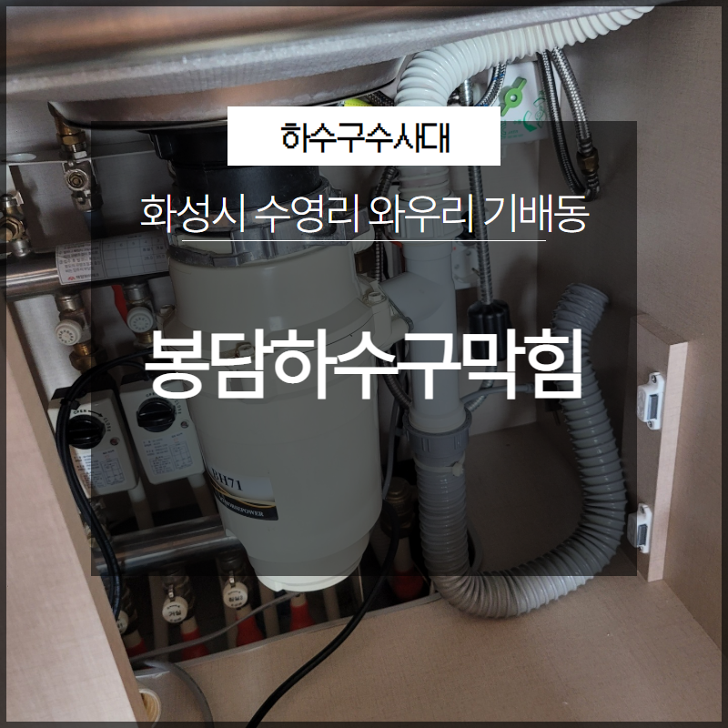
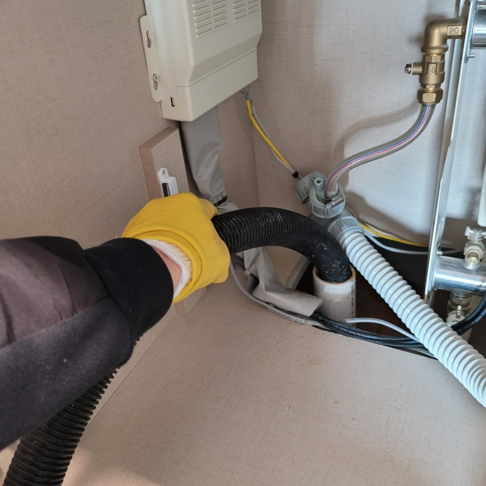
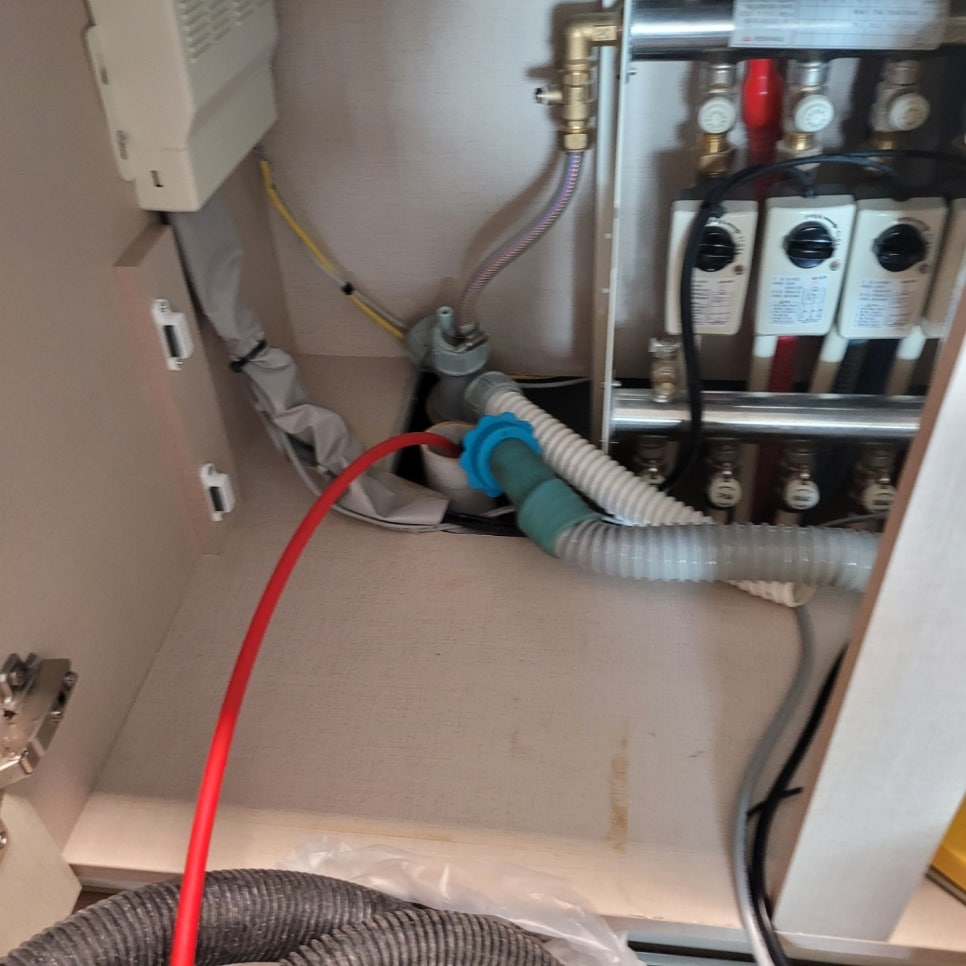
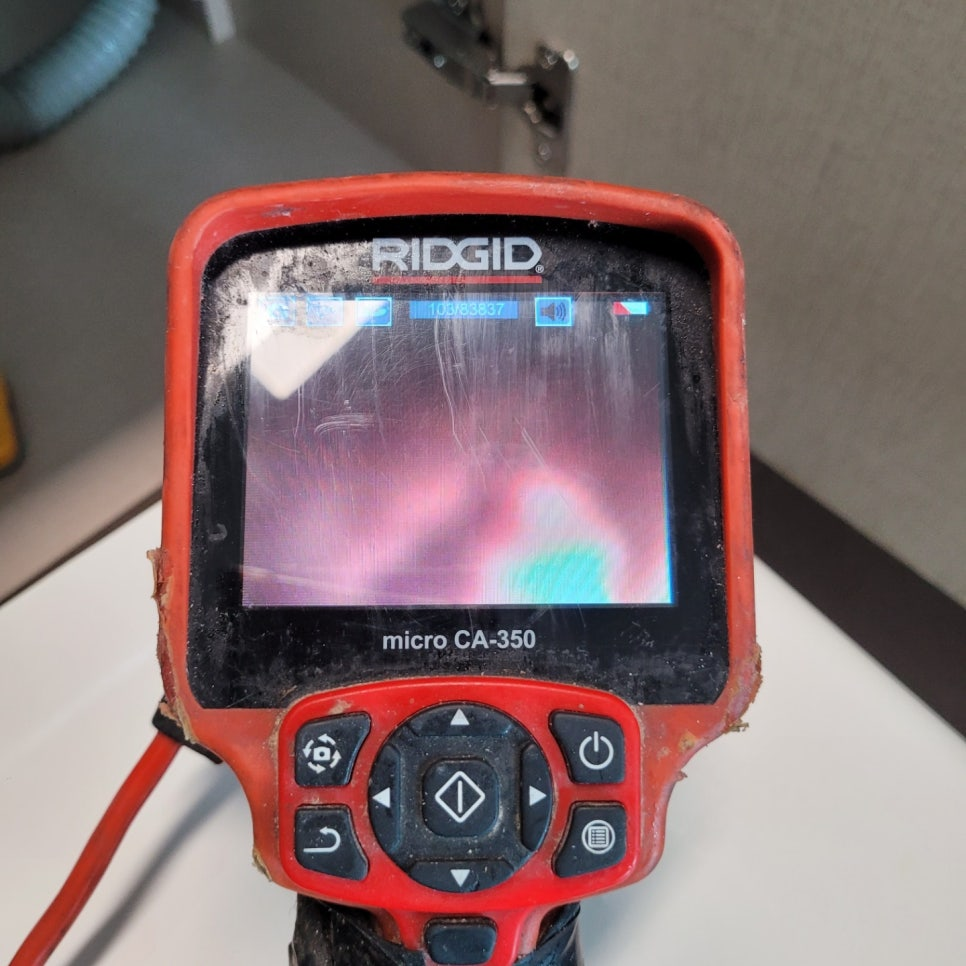
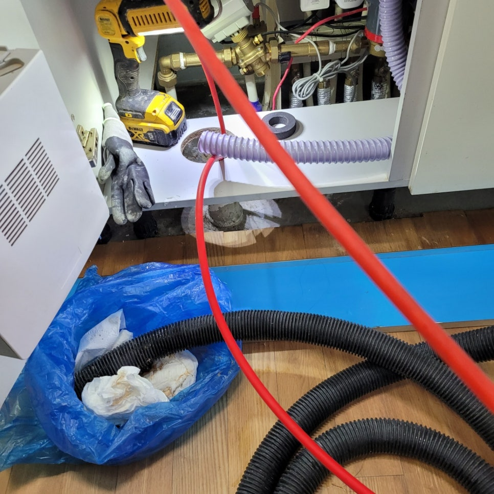

🏠 화성시 봉담하수구막힘 수영리 와우리 기배동 막힘 해결
화성 와우리 싱크대막힘 전문 시공 후기

📋 작업 개요
- 위치: 화성 와우리, 와우리, 화성
- 서비스 유형: 싱크대막힘, 하수구막힘, 배관막힘, 역류해결
- 작업 일시: 2023. 6. 7. 0:02
- 업체명: 하수구수사대 (010-5615-2118)
🔍 문제 상황
안녕하세요. 하수구수사대입니다.
우리는 매일 사용하는 생활하수를 버리고 생활을 하고 있습니다. 이러한 생활하수를 버리는 곳은 화장실이나 싱크대가 있을 수 있는데요. 이곳은 물을 자주 사용하고 버리는 곳인 만큼 단 한순간이라도 막히게 되는 경우에는 여러 가지로 불편함이 커지게 될 수 있습니다.
평소 정기관리를 통해서 막힘이 발생을 하지 않도록 주의를 해주는 것이 필요하다고 할 수 있습니다. 특히나 싱크대 같은 경우에는 한 번씩 뜨거운 물을 부어주게 되면 기름때들이 배관 속에서 엉기는 것을 어느 정도 방지를 할 수 있게 되는 것입니다.
저희 하수구수사대에서 방문한 현장은

🔎 원인 분석
💡 전문가 진단: 저희 하수구수사대에서 방문한 현장은
배관 막힘의 의뢰를 받고 방문한 곳인데요. 화성시 봉담하수구막힘 수영리 와우리 기배동 막힘을 해결한 곳입니다. 이번 현장은 다세대의 가정집으로 싱크대가 갑자기 막히게 되면서 연락을 주신 곳이었습니다.
이번 방문한 현장의 해결 상황을 통해서 배관 막힘을 어떻게 해결하게 되었는지를 자세하게 알려드리도록 하겠습니다. 요즘은 주변을 보면 여러 세대가 함께 모여사는 아파트나 빌라 형태의 주택들을 많이 볼 수 있습니다.
이러한 곳은 대부분 공동배관을 사용하는 경우가 많이 있는데요. 공동배관 같은 경우는 여러 세대가 흘려보내는 생활하수들을 한꺼번에 내려보내는 시스템이다 보니 아무래도 배관 막힘이 더욱 자주 발생을 하게 될 수 있는 것입니다.
그러므로 평소에도 전문 업체를 통한 정기관리를 통해서 신경을 쓰는 것이 필요하다고 할 수 있는데요. 이번에 방문한 화성시 봉담하수구막힘 수영리 와우리 기배동 현장의 경우도 주택의 공동배관이 막히게 되면서 한 가정의 싱크대가 막히고 역류를 하고 있는 상황이었습니다.
빠르게 방문을 해서 해결을 하도록 도와드렸습니다.

🔧 작업 과정
이번에 방문한 곳처럼 일반 가정의 경우에 주로 싱크대가 막히게 되는 원인으로는 대부분 음식물 찌꺼기들이 덩어리를 이루면서 막힘이 발생을 하는 것이 대부분이라고 할 수 있는데요.
평소에 조심을 한다고 하더라도 조금씩 흘러들어가는 음식물들이 쌓이게 되면서 시간이 오래 지나게 되면 덩어리로 인해서 막힘을 유발하는 원인물질이 될 수 있는 것입니다.
그러므로 이물질이 막고 있는 경우에는 원인을 제거를 해야 해결이 가능하기 때문에 전문 업체를 통해서 이를 제거함으로써 해결을 하시는 것이 필요하다고 할 수 있습니다.
원인 파악을 먼저 하고 제거를 하는 작업을 하기 때문에
정확한 해결이 가능하다고 할 수 있습니다. 화성시 봉담하수구막힘 수영리 와우리 기배동 현장의 본격적으로 내시경 작업을 하기 위해서 내시경 카메라를 배관 내부로 넣어서 확인을 해보았는데요.
이물질들을 확인 후 이를 제거하기 위한 장비를 세팅을 하고 제거하는 작업을 시작하였습니다. 먼저 역류로 올라온 이물질들을 일부 제거를 하고 작업을 시작하였습니다.
이렇게 원인 파악을 한 뒤에는 전문 장비를 이용해서 이물질들을 모두 제거를 하는 작업을 진행하게 됩니다. 어떤 배관이든 시간이 오랫동안 지나게 되면 이물질들이 딱딱하게 굳어지게 될 수 있어서 이물질들을 분쇄하고 제거를 하는 작업을 해주어야 하는 것입니다.


✅ 작업 완료
내시경 카메라를 이용해서 내부를 확인하면서 반복 제거 작업 후
배관 내부에 있는 원인들을 제거 후 모두 해결을 하는 작업을 하였습니다.




⚠️ 주방 싱크대 배관 막힘 예방 수칙
- ✅ 기름기가 묻은 식기나 프라이팬은 설거지 전 키친타올로 반드시 기름때를 닦아내세요.
- ✅ 주기적으로 싱크대 개수대에 뜨거운 물을 가득 받아 한 번에 내려 배관 내부 기름을 씻어내세요.
- ✅ 배수구 거름망을 미세한 필터로 사용하시고 음식물 찌꺼기가 틈으로 새어 들지 않게 관리하세요.
- ✅ 베이킹소다와 식초를 뜨거운 물과 함께 일주일에 한 번씩 부어주면 배관 살균과 막힘 예방에 좋습니다.
💡 핵심 정리
- 확실한 장비 작업(내시경 점검 및 샤프트 스케일링)으로 원인을 뿌리 뽑습니다.
- 작업 후 1년 이내에 동일한 부위 재발 시 100% 무상 A/S 서비스를 보장합니다.
- 서울 · 경기 · 인천 전 지역에 24시간 언제든 긴급 출동할 수 있도록 항시 대기 중입니다.
❓ 자주 묻는 질문 (FAQ)
🚨 화성 와우리 싱크대막힘 문제로 고민이신가요?
정확한 원인 진단과 확실한 시공으로 재발 없는 해결을 약속드립니다.
24시간 긴급 출동 | 서울 · 경기 · 인천 전지역 | 1년 내 재발 시 무상 A/S